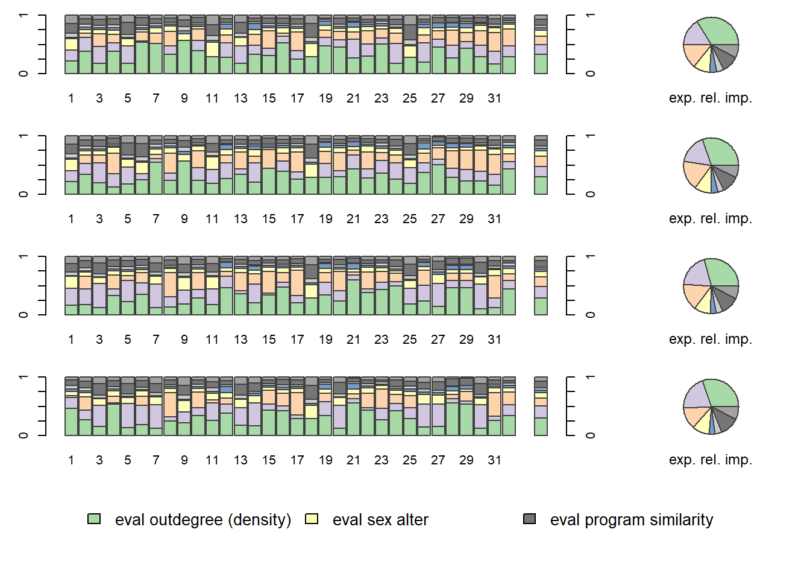

## NULLThis website converted the following original .R scripts into .rmd files.
Please visit GitHub for the latest .R files.
Specific questions with respect to the .rmd files can be addressed to: Jochem Tolsma.
For questions on RSiena please visit the designated GitHub page.
Here, script are shown that can be used to calculate the expected relative importance of our effects.
Background reading: Indlekofer & Brander (2013).
Until now, the interpretation of estimated effects in our SIENA models has been limited to testing their statistical significance, which determines whether an effect plays a role in the evolution of the network (using t-statistics). But we do not yet know how these effects fare against each other.
There are four issues when extrapolating the size of estimated parameters to their relative importance in SIENA models:
Explanatory statistics have different scales (e.g., one micro-step may increase the number of reciprocated ties by at most 1 but may result in up to 2(N-2) new transitive triplets).
Explanatory variables are often correlated, making it difficult to establish causality (e.g., a tie abridging a two-path may yield a new transitive triplet, while at the same time, a reciprocated tie).
Multiple and complex choice sets exist, where network effects influence the probabilities of several alternative choices, and these effects are themselves influenced by a combination of several effects. This interdependence makes it challenging to assess the individual contribution of each effect to actor decisions.
The data undergoes substantial unobserved changes over
time, and the size of parameter estimates is strongly dependent on
the structure of the evolving network data. The absence of certain
network configurations can render specific effects irrelevant in
decision-making processes at certain points in time (e.g., if an ego has
no incoming ties, he has no opportunity to reciprocate a tie, making
that the reciprocity effect cannot influence his
decision).
To compare the relative importance of effects within a model, among different models, or across different datasets, we require a measure that specifically focuses on the extent to which effects influence actor decision probabilities.
This is where the concept of ‘Relative Importance’ (RI) measures comes into play. This measure reflects the extent that estimated model parameters affect change probabilities in network decision probabilities. They should be interpreted as the influence of effects on network changes relative to one another. The importance of an effect is estimated based on the extent to which network micro-steps would have differed if this effect were to be omitted. Probabilities for tie changes from the perspective of each actor are calculated using the fitted model parameters. Subsequently, each parameter is fixed to 0 and the change probabilities are recalculated. The influence of an effect on network (or: behavior) micro-steps is evaluated based on the magnitude of the difference in the distribution of change probabilities with the particular effect present versus absent. These differences are normalized so that their sum is 1 for each actor, and subsequently averaged across actors.
For more info, we refer to the article by Indlekofer & Brandes (2013) and the RSiena manual section 13.5.1.
First, download the data, and put it in the ‘data’ folder. But first make a ‘data’ folder
ifelse(!dir.exists("data"), dir.create("data"), FALSE)
download.file("https://www.stats.ox.ac.uk/~snijders/siena/vdBunt_data.zip",
destfile='./data/vdb.zip')
unzip('./data/vdb.zip', exdir='./data/')continue with loading the data files. And perform some wrangling.
vdb.w0 <- as.matrix(read.table("./data/VRND32T0.DAT"))
vdb.w1 <- as.matrix(read.table("./data/VRND32T1.DAT"))
vdb.w2 <- as.matrix(read.table("./data/VRND32T2.DAT"))
vdb.w3 <- as.matrix(read.table("./data/VRND32T3.DAT"))
vdb.w4 <- as.matrix(read.table("./data/VRND32T4.DAT"))
vdb.w5 <- as.matrix(read.table("./data/VRND32T5.DAT"))
vdb.w6 <- as.matrix(read.table("./data/VRND32T6.DAT"))
vdb.attr <- as.matrix(read.table("./data/VARS.DAT"))
# Take account of missing data codes 6 and 9:
vdb.w0[vdb.w0 %in% c(6,9)] <- NA
vdb.w1[vdb.w1 %in% c(6,9)] <- NA
vdb.w2[vdb.w2 %in% c(6,9)] <- NA
vdb.w3[vdb.w3 %in% c(6,9)] <- NA
vdb.w4[vdb.w4 %in% c(6,9)] <- NA
vdb.w5[vdb.w5 %in% c(6,9)] <- NA
vdb.w6[vdb.w6 %in% c(6,9)] <- NA
# Recode 4 (acquaintance) and 5 (difficult) to no tie
vdb.w0[vdb.w0 %in% c(4,5)] <- 0
vdb.w1[vdb.w1 %in% c(4,5)] <- 0
vdb.w2[vdb.w2 %in% c(4,5)] <- 0
vdb.w3[vdb.w3 %in% c(4,5)] <- 0
vdb.w4[vdb.w4 %in% c(4,5)] <- 0
vdb.w5[vdb.w5 %in% c(4,5)] <- 0
vdb.w6[vdb.w6 %in% c(4,5)] <- 0
# Use the "friendly relation" relation by recoding:
vdb.w0[vdb.w0 %in% c(1,2,3)] <- 1
vdb.w1[vdb.w1 %in% c(1,2,3)] <- 1
vdb.w2[vdb.w2 %in% c(1,2,3)] <- 1
vdb.w3[vdb.w3 %in% c(1,2,3)] <- 1
vdb.w4[vdb.w4 %in% c(1,2,3)] <- 1
vdb.w5[vdb.w5 %in% c(1,2,3)] <- 1
vdb.w6[vdb.w6 %in% c(1,2,3)] <- 1Construct an RSiena data object and algorithm
library(RSiena)
# Model specification:
friends <- sienaDependent(array(c(vdb.w1,vdb.w2,vdb.w3,vdb.w4),
dim=c(32, 32, 4)))
sex <- coCovar(vdb.attr[,1])
program <- coCovar(vdb.attr[,2])
smoke <- coCovar(vdb.attr[,3])
(vdb.data <- sienaDataCreate(friends,sex,program,smoke))#> Dependent variables: friends
#> Number of observations: 4
#>
#> Nodeset Actors
#> Number of nodes 32
#>
#> Dependent variable friends
#> Type oneMode
#> Observations 4
#> Nodeset Actors
#> Densities 0.12 0.14 0.18 0.22
#>
#> Constant covariates: sex, program, smokevdb.algo <- sienaAlgorithmCreate(projname = 'vdb_1234_f', nsub=3, n3=2000, seed=12321)#> If you use this algorithm object, siena07 will create/use an output file vdb_1234_f.txt .We define a simple model.
vdb.eff <- getEffects(vdb.data)
#effectsDocumentation(vdb.eff)
vdb.eff <- includeEffects(vdb.eff,transTrip)#> effectName include fix test initialValue parm
#> 1 transitive triplets TRUE FALSE FALSE 0 0vdb.eff <- includeEffects(vdb.eff,egoX,altX,sameX,interaction1="sex")#> effectName include fix test initialValue parm
#> 1 sex alter TRUE FALSE FALSE 0 0
#> 2 sex ego TRUE FALSE FALSE 0 0
#> 3 same sex TRUE FALSE FALSE 0 0vdb.eff <- includeEffects(vdb.eff,simX,interaction1="program")#> effectName include fix test initialValue parm
#> 1 program similarity TRUE FALSE FALSE 0 0vdb.eff <- includeEffects(vdb.eff,simX,interaction1="smoke")#> effectName include fix test initialValue parm
#> 1 smoke similarity TRUE FALSE FALSE 0 0print(vdb.eff)#> effectName include fix test initialValue parm
#> 1 constant friends rate (period 1) TRUE FALSE FALSE 4.79448 0
#> 2 constant friends rate (period 2) TRUE FALSE FALSE 5.16295 0
#> 3 constant friends rate (period 3) TRUE FALSE FALSE 4.80941 0
#> 4 outdegree (density) TRUE FALSE FALSE -0.50683 0
#> 5 reciprocity TRUE FALSE FALSE 0.00000 0
#> 6 transitive triplets TRUE FALSE FALSE 0.00000 0
#> 7 sex alter TRUE FALSE FALSE 0.00000 0
#> 8 sex ego TRUE FALSE FALSE 0.00000 0
#> 9 same sex TRUE FALSE FALSE 0.00000 0
#> 10 program similarity TRUE FALSE FALSE 0.00000 0
#> 11 smoke similarity TRUE FALSE FALSE 0.00000 0Estimate the model.
ans <- siena07(vdb.algo,
data=vdb.data,
effects=vdb.eff,
useCluster=TRUE, nbrNodes=10, initC=TRUE,
returnDeps=TRUE)
summary(ans)#> Estimates, standard errors and convergence t-ratios
#>
#> Estimate Standard Convergence
#> Error t-ratio
#>
#> Rate parameters:
#> 0.1 Rate parameter period 1 3.9082 ( 0.6349 )
#> 0.2 Rate parameter period 2 4.1192 ( 0.6628 )
#> 0.3 Rate parameter period 3 3.1042 ( 0.4660 )
#>
#> Other parameters:
#> 1. eval outdegree (density) -2.0020 ( 0.1737 ) 0.0344
#> 2. eval reciprocity 1.3751 ( 0.2167 ) 0.0177
#> 3. eval transitive triplets 0.3390 ( 0.0430 ) 0.0438
#> 4. eval sex alter 0.5712 ( 0.1833 ) 0.0323
#> 5. eval sex ego -0.3723 ( 0.1954 ) 0.0371
#> 6. eval same sex 0.1480 ( 0.1791 ) 0.0118
#> 7. eval program similarity 0.7375 ( 0.2048 ) -0.0500
#> 8. eval smoke similarity 0.3512 ( 0.1480 ) -0.0059
#>
#> Overall maximum convergence ratio: 0.0818
#>
#>
#> Total of 2436 iteration steps.
#>
#> Covariance matrix of estimates (correlations below diagonal)
#>
#> 0.030 -0.008 -0.004 -0.014 -0.003 -0.020 -0.002 -0.003
#> -0.218 0.047 -0.002 0.006 -0.011 -0.004 -0.005 -0.001
#> -0.502 -0.219 0.002 0.001 0.000 0.000 0.002 0.000
#> -0.444 0.161 0.077 0.034 -0.004 0.014 0.000 0.001
#> -0.081 -0.262 0.002 -0.103 0.038 0.009 0.001 -0.001
#> -0.640 -0.098 0.036 0.431 0.268 0.032 -0.005 0.000
#> -0.046 -0.114 0.196 -0.008 0.032 -0.144 0.042 0.001
#> -0.102 -0.019 0.058 0.038 -0.020 -0.015 0.034 0.022
#>
#> Derivative matrix of expected statistics X by parameters:
#>
#> 184.696 105.508 643.343 12.800 3.824 119.099 9.662 16.887
#> 69.579 87.550 314.824 -1.896 5.784 50.095 6.472 8.086
#> 474.474 349.193 2695.629 21.139 10.384 301.779 4.874 43.062
#> 15.976 -1.758 25.000 43.906 11.478 -14.653 -4.222 -0.611
#> 4.230 9.951 2.550 12.564 34.570 -11.232 -3.681 0.188
#> 117.663 79.245 438.147 -15.909 -11.504 124.510 15.172 13.094
#> 11.931 10.722 36.603 -4.475 -3.522 16.367 26.956 -1.256
#> 20.722 15.635 62.187 -0.989 0.222 15.684 -1.407 46.253
#>
#> Covariance matrix of X (correlations below diagonal):
#>
#> 206.667 140.579 855.058 19.821 4.828 135.531 10.929 22.623
#> 0.717 186.010 755.908 1.270 8.147 105.446 12.511 21.107
#> 0.812 0.757 5365.247 45.431 -8.571 586.528 45.527 93.594
#> 0.201 0.014 0.090 47.120 17.044 -15.072 -6.838 -0.446
#> 0.054 0.097 -0.019 0.402 38.196 -12.948 -5.622 -0.285
#> 0.795 0.652 0.675 -0.185 -0.177 140.771 18.541 17.985
#> 0.145 0.174 0.118 -0.189 -0.173 0.297 27.655 -2.902
#> 0.233 0.229 0.189 -0.010 -0.007 0.225 -0.082 45.509Data reveals evidence for all tested effects except for gender similarity.
Now, we can go to applying sienaRI to the van de Bunt
data.
#get parameters
theta.eval <- ans$theta
#and effects
myeff.eval <- ans$effects
#use sienaRI()
RI <- sienaRI(
data = vdb.data,
theta = theta.eval,
algorithm = vdb.algo,
effects = myeff.eval
)And plot it.
plot(RI, addPieChart = TRUE )
The bar charts display the relative impacts of effects of our model on individual actor decisions for all observations. The last bar chart in each row, as well as the pie chart, display expected relative importances of included effects for the next step, averaged across actors.
Copyright © 2020 Jochem Tolsma